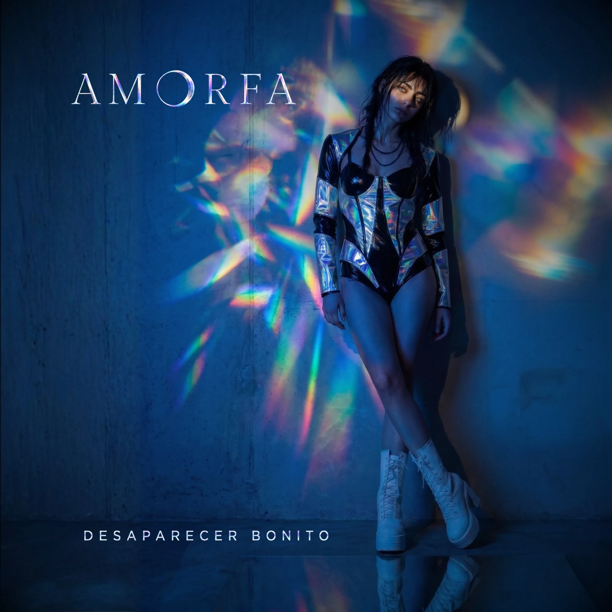
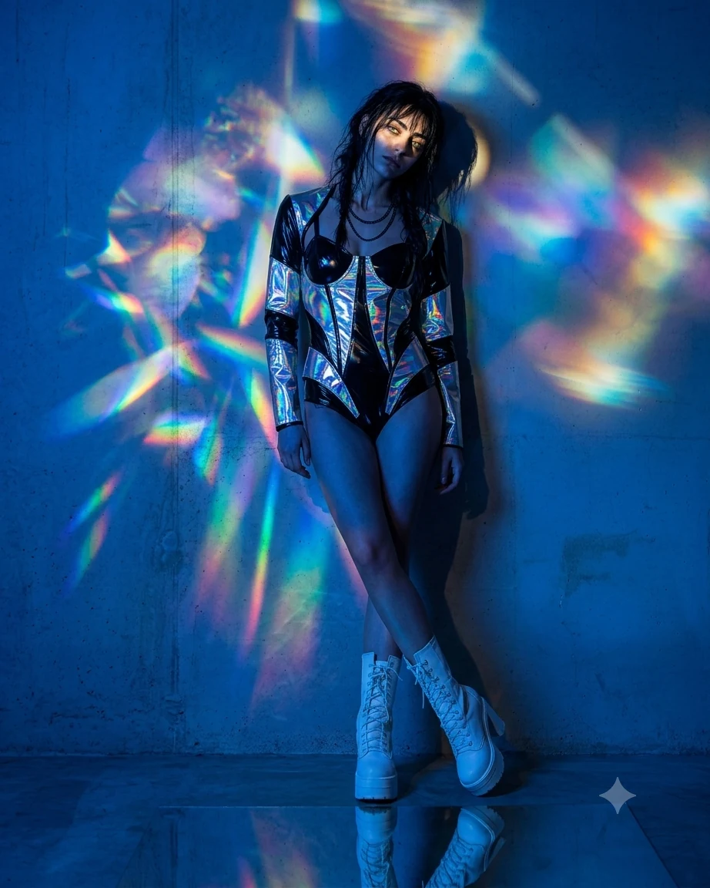

Desaparecer Bonito
Câmera, desejo, aplicativo, corpo, astrologia, recaída, isolamento e algumas péssimas decisões tomadas sob uma luz muito bonita.
“Eu estava escrevendo situações.”
Antes de existir um álbum, havia pequenas cenas. Escolher uma foto. Apagar. Postar de novo. Conferir quem viu. Abrir um aplicativo tarde demais. Tentar parecer indiferente diante de uma pessoa bonita. Investigar uma foto que definitivamente não precisava ser investigada.
As músicas foram aparecendo desse lugar. Algumas são cruéis, outras ridículas, outras muito mais tristes do que a batida deixa perceber. Em várias delas, a personagem começa achando que entendeu exatamente o que está acontecendo e termina alguns centímetros menos segura.
Desaparecer Bonito foi também um disco que mudou enquanto já existia. O primeiro conjunto tinha outro nome, outra capa, outra abertura e outro final. Voltar a ele depois tornou evidente que algumas músicas pediam outra casa — e que outras, escritas depois, diziam melhor o que este álbum estava tentando descobrir.
Me Usa de Volta
O primeiro álbum era outro.
Na primeira configuração da Antologia, o Álbum I se chamava Tudo Que Eu Uso Me Usa de Volta. Também tinha treze faixas. Sete delas chegaram ao álbum atual; seis saíram e seis entraram.
A diferença não foi apenas trocar o nome. A primeira versão abria com Versão Consumida e fechava com Terminal. A Câmera Ama ainda estava fora da tracklist principal. Obliterar nem ocupava o lugar que hoje encerra o disco.
Havia muita coisa sendo escrita e transformada em música ao mesmo tempo. A primeira vontade era colocar esse material para fora. Depois veio uma decisão menos excitante e mais importante: separar melhor as canções. Algumas funcionavam individualmente, mas já não pareciam pertencer à mesma conversa quando colocadas lado a lado.
O resultado foi um disco com o mesmo número de faixas e quase metade da formação trocada. É uma mudança grande o bastante para que a versão antiga não pareça um rascunho inútil. Ela mostra exatamente onde o projeto estava antes de aprender a cortar.
O arquivo descreve uma capa em preto e branco absoluto, com dois manequins rachando no ponto de contato e grain analógico. A imagem original não foi recriada aqui: este registro permanece apenas como memória visual até o arquivo da capa ser localizado.
13 continuaram 13.
O tamanho quase não mudou. O conteúdo, sim. As faixas marcadas abaixo atravessaram as duas formações.
Primeira configuração
- 01Versão Consumida
- 02Fusão Nuclear
- 03Luz Azul
- 04Modo Avião
- 05Só o Que Vende / Livre Pra Quem
- 06Kouros de Silício
- 07Corpo-Entulho
- 08Vênus Aflita
- 09Você Era Banal
- 10Placebo
- 11Glamour Febril
- 12Cento e Oitenta
- 13Terminal
Desaparecer Bonito
- 01A Câmera Ama (Todo Mundo Sabe)
- 02Luz Azul
- 03Livre Pra Quem?
- 04Vênus Aflita
- 05Kouros de Silício
- 06Corpo-Entulho
- 07Modo Avião
- 08Eu Superei Mas... (Olhadinha)
- 09Ninguém Nunca Sabe
- 10Crédito de Uso
- 11Low Profile
- 12Terminal
- 13Obliterar
Algumas coisas que ficaram pelo caminho.
Luz Azul foi a primeira música escrita dessa leva e permaneceu no álbum mesmo quando quase tudo ao redor dela mudou.
A Câmera Ama começou fora da formação principal e terminou abrindo o álbum atual.
Terminal era o encerramento da primeira versão. Hoje é a faixa 12.
Olhadinha virou Eu Superei Mas..., mas o apelido ficou porque a mentira da personagem funciona melhor com ele.
Sem Registro virou Low Profile. O título antigo ainda aparece dentro da letra.
O álbum atravessa electroclash, new wave, synth-pop, indie dance, post-punk disco e até um girl-group pop bastante pouco confiável.
Luz no concreto.
A sessão prismática leva para a imagem a mesma mistura de superfície bonita e desconforto que aparece em várias músicas do disco.

A Câmera Ama (Todo Mundo Sabe)
“Também sei os bordões. / Também fico até o fim.”
Ela abre o disco rindo da certeza instantânea: gente que transforma qualquer assunto em conteúdo, opinião pronta, corte e reação. Seria muito fácil deixar a música confortável desse jeito — apontando para os outros.
A parte que faz a faixa funcionar vem quando a câmera vira um pouco. Quem canta conhece os bordões, sabe que está cansada e continua assistindo. A crítica perde a superioridade e fica mais engraçada, porque ninguém sai inocente.
LER LETRA+
A Câmera Ama (Todo Mundo Sabe)
Luz branca acesa.
Boca pronta.
Dente seco.
Olho fixo.
Trinta segundos de certeza
numa cabeça sem atrito.
Todo desastre ganha corte.
Toda fala ganha filtro.
O vazio veste sorriso
quando descobre que rende.
A câmera ama
cabeça lisa.
(lisa)
Todo mundo sabe.
(sa-be)
Todo mundo clica.
(clica)
Todo mundo cospe.
Todo mundo volta.
(volta)
A gente abriu vitrine
pro vazio.
Todo mundo sabe.
(sa-be)
Todo mundo clica.
(clica)
A bênção veio
sem pensamento.
Clica.
(clica)
Diz que odeia.
Assiste inteiro.
Manda no grupo
com nojo e risada.
Salva o vídeo.
Comenta morta.
Dá mais alcance
à própria náusea.
O algoritmo não tem gosto.
Tem meta
e repetição.
Toda vergonha com plateia
ganha roupa de campanha.
Quando a fala falha,
muda o enquadramento.
Até o pedido de desculpas
vem com thumbnail limpa.
A burrice veio
de branco.
(branco)
Todo mundo sabe.
(sa-be)
Todo mundo clica.
(clica)
Todo mundo cospe.
Todo mundo volta.
(volta)
A gente abriu vitrine
pro vazio.
Todo mundo sabe.
(sa-be)
Todo mundo clica.
(clica)
A bênção veio
sem pensamento.
Clica.
(clica)
Também sei os bordões.
Também fico até o fim.
A tela serve anestesia.
Meu dedo assina.
Minha boca ri.
Finjo escolha.
Ela chama vício.
(vício)
A ignorância é bênção.
A bênção é serviço.
A câmera ama.
(ama)
A câmera ama.
(ama)
Cabeça lisa.
(lisa)
Cabeça lisa.
(lisa)
O feed aplaude.
(aplaude)
Todo mundo sabe.
(sa-be, sa-be)
Todo mundo clica.
(clica)
Todo mundo cospe.
Todo mundo volta.
(volta)
A gente abriu vitrine
pro vazio.
Todo mundo sabe.
(sa-be)
Todo mundo clica.
(clica)
A bênção veio
sem pensamento.
(pensamento)
Cabeça lisa.
(clique)
Boca pronta.
(clique)
Dente seco.
(clique)
Feed aberto.
(clique)
A câmera ama.
(clique)
Ninguém desliga.
MUSIXMATCH ↗Luz Azul
“A tela apaga. / A fome fica.”
É uma música sobre excesso de escolha que termina parecendo falta. Um rosto some, outro entra no lugar, o dedo continua descendo e nada disso produz necessariamente encontro.
O que gosto nela é que a personagem não pode simplesmente culpar a tela. Ela volta. Sabe que volta. A interface oferece a sensação de controle enquanto a própria vontade vai ficando automática.
LER LETRA+
Luz Azul
O polegar desce.
A íris dilata.
Um rosto some,
outro aparece.
Tão perto em metros,
tão longe em mim.
Eu passo o dedo.
Eu digo sim.
Vidro frio.
Boca seca.
O corpo aprende
a escolher depressa.
Escolho rápido.
Dispenso limpo.
Do outro lado,
o mesmo ritmo.
A pressa resolve
o que o desejo
levaria tempo
pra ferir.
Nada para.
Nada imprime.
A luz exibe.
Não reúne.
não reúne
Mastigamos claridade.
Eu volto
pra luz azul.
Volto sem querer voltar.
Um corpo some,
outro vem ocupar.
Eu deixo
a parte mais quente
numa tela
sem mão.
A luz me come por dentro
e chama isso de opção.
opção
Luz azul.
Luz azul.
Eu volto
pra luz azul.
sem peso
Quarto no escuro.
Corpo em porção.
Ombro.
Boca.
Sem nome
sem chão.
Um beijo curto.
Um táxi longe.
A noite passa
e não responde.
Eu viro imagem,
boa o bastante.
Dura um segundo.
Depois distante.
Sal no vidro.
Resto morno.
Eu recolho
o que sobrou de mim.
A pele do dedo
já não agarra.
No fim da falange,
o desenho falha.
Cada deslizamento
alisa um pouco
o lugar da marca
que ninguém nota.
ninguém nota
Mastigamos claridade.
Eu volto
pra luz azul.
Volto sem querer voltar.
Um corpo some,
outro vem ocupar.
Eu deixo
a parte mais quente
numa tela
sem mão.
A luz me come por dentro
e chama isso de opção.
opção
Luz azul.
Luz azul.
Eu volto
pra luz azul.
A oferta volta crua
pro corpo
que ofertou.
Eu saio com a boca cheia
do que não ficou.
O brilho azul
ainda aberto.
O quarto inteiro
aceso demais.
Eu digo:
foi só desejo.
Mas volto
pra procurar mais.
O polegar desce.
A íris dilata.
Nada para.
Nada passa.
O polegar desce.
A íris dilata.
Nada para.
Nada basta.
Eu volto
pra luz azul.
Volto sem querer voltar.
Um corpo some,
outro vem ocupar.
Eu deixo
a parte mais quente
numa tela
sem mão.
A luz me come por dentro
e chama isso de opção.
opção
Eu volto
pra luz azul.
Volto sem querer voltar.
Mastigamos claridade
até sobrar
só clarão.
A tela apaga.
A fome fica.
fica
A tela apaga.
A fome fica.
MUSIXMATCH ↗Livre Pra Quem?
“Se o corpo é deus / e o afeto é dízimo.”
Aqui o desejo fica bem menos democrático do que gosta de parecer. A música entra em bio de aplicativo, idade, corpo, pose, masculinidade, aprovação e naquele pequeno mercado em que todo mundo diz procurar liberdade enquanto estabelece uma lista enorme de condições.
A parte mais incômoda é que a personagem não se coloca fora disso. Ela deseja justamente aquilo que também a exclui. Quando chega a “de tanto amar errado, me tornei igual”, a acusação já voltou para casa.
LER LETRA+
Livre Pra Quem?
Eu te amo
se rende em story.
Se tua selfie
acende alguma coisa em mim.
Antes da alma.
Antes da queda.
Antes da parte
que ninguém quer ver.
Eu te amo
se for a curva certa.
Se tua idade
caber no filtro.
Se tua pele
couber na fantasia
de quem escolhe
e nunca sangra.
No fundo,
eu amo
o que me exclui.
Gozo
com quem me apaga.
me apaga.
me apaga.
Aprendi cedo:
afeto demais fede.
Querer demais
afasta.
Amar
é perder poder.
Eu te amo,
mas só o que vende.
o que vende.
Só o que brilha.
Só o que prende.
Eu te amo,
mas só o que rende.
o que rende.
Um story bonito
e ninguém por dentro.
Livre pra quem?
Livre pra quem?
pra quem?
pra quem?
Se o corpo é deus
e o afeto é dízimo.
Livre pra quem?
Só o que vende.
Só o que vende.
Livre pra quem?
Livre pra quem?
Amo tua bio no app.
Ativo.
Discreto.
Não afeminado.
Sem tempo pra drama.
Corpo é meu templo,
desde que minha alma
não entre
sem convite.
Amo competir
pelo nada.
Amo a fila
dos outros.
Amo quando me deixam
no vácuo.
no vácuo.
no vácuo.
Por um segundo,
existiram demais
pra mim.
E nós,
velhos aos trinta.
Afeminados que sobraram.
Os de cicatriz.
Os que choram.
Os que amam
sem contrato de uso.
Viramos piada
em grupo de zap.
Boa noite
sem resposta.
Nude deixado
no visto.
E dizem
que o amor é livre.
é livre?
é livre?
Eu te amo,
mas só se vende.
se vende.
Só se corta.
Só se rende.
se rende.
Eu te amo,
mas só se cabe
no corpo certo,
na pose certa,
na fome certa.
Livre pra quem?
Livre pra quem?
pra quem?
pra quem?
Se a vitrine escolhe
quem pode sofrer bonito.
Livre pra quem?
Te amo com raiva
de quem esperou amor
e recebeu
emoji de fogo.
Te amo
quando me apaga.
Quando vira algoritmo
de rosto perfeito,
alma ausente.
alma ausente.
Te amo
como vício coletivo,
como febre
de aprovação.
Como culto
onde o corpo é deus.
Todo mundo ajoelha.
Ninguém
encosta de verdade.
Sem opinião.
Sem choro.
Sem marca.
Sem fome.
sem fome.
Bonito em silêncio.
Limpo na foto.
Sem opinião.
Sem choro.
Sem marca.
Sem fome.
sem fome.
Perfeito
pra não amar ninguém.
Eu te amo,
mas só o que vende.
o que vende.
Só o que brilha.
Só o que prende.
Eu te amo,
mas já não sei
se sou quem deseja
ou quem aprendeu
a desaparecer.
desaparecer.
desaparecer.
Livre pra quem?
Livre pra quem?
pra quem?
pra quem?
Se amar é risco.
Se afeto é dívida.
Se o corpo é templo
e eu fico
do lado de fora.
Livre pra quem?
Só o que vende.
Só o que vende.
Livre pra quem?
Livre pra quem?
Só o que vende.
Só o que vende.
Eu te amo
com culpa.
Com vergonha.
Com medo.
De tanto amar errado,
me tornei igual.
me tornei igual.
Eu te amo,
mas só
o que vende.
MUSIXMATCH ↗Vênus Aflita
“Tua sinastria / deu positivo.”
A ideia nasceu quase como uma piada: tratar mapa astral com a seriedade de um exame clínico antes de se envolver com alguém. Hora de nascimento, ascendente, Mercúrio, sinastria — tudo vira tentativa de obter uma garantia que obviamente não existe.
Ela funciona melhor quando a astrologia não aparece como crença nem como deboche puro. É só mais uma maneira elegante de procurar sinais onde o desejo já tomou a decisão.
LER LETRA+
Vênus Aflita
Me diz
tua hora de nascimento.
Teu ascendente
tem cara
de mensagem longa
às quatro e treze.
Lua em água.
Olho vermelho.
Tua mão parada
fazendo fumaça
na mesa de inox.
Mercúrio retrógrado.
Teu beijo torto.
Eu gosto
de catástrofe
com legenda.
Me diz
tua hora de nascimento.
Teu mapa astral
bateu no meu vício.
Vênus aflita.
Pulso bonito.
Eu faço amor
igual previsão.
(BV) previsão / previsão
Tua sinastria
deu positivo.
Tua sinastria
deu positivo.
Você tem
cara de casa oito.
Problema caro.
Boca de risco.
Eu leio tua mão.
Linha da vida
batendo no meu cinto.
Teu sol quadrado.
Minha língua em queda.
A conta fecha.
A gente não.
Marte no quarto.
Febre no copo.
Eu gosto
de queda
com laudo.
Me diz
tua hora de nascimento.
Teu mapa astral
bateu no meu vício.
Vênus aflita.
Pulso bonito.
Eu faço amor
igual previsão.
(BV) previsão / previsão
Tua sinastria
deu positivo.
Tua sinastria
deu positivo.
Não quero destino.
Quero dado sujo.
Margem curta.
Risco alto.
Teu céu aberto
na minha perícia.
O dado
virou corpo.
positivo
positivo
Me diz
tua hora de nascimento.
Teu mapa astral
bateu no meu vício.
Vênus aflita.
Pulso bonito.
Eu faço amor
igual previsão.
MUSIXMATCH ↗Kouros de Silício
“Eu olhava e aprendia / a ficar menos corpo.”
Essa é uma música sobre olhar um corpo idealizado tempo demais e começar a usá-lo como régua. O banheiro, o espelho, a bio, a balança e o vidro deixam de ser cenário e viram pequenas provas diárias de inadequação.
O título tem uma frieza que gosto bastante. O homem perfeito ali já parece meio estátua, meio produto, meio imagem impossível de alcançar — e ainda assim é capaz de ensinar alguém a se odiar com disciplina.
LER LETRA+
Kouros de Silício
azulejo branco.
lâmpada fria.
(azulejo branco.
lâmpada fria.)
espelho do banheiro.
Tua pele segurava a luz
do lado certo do vidro.
eu olhava e aprendia
a ficar menos corpo.
na bio:
ativo.
discreto.
sem drama.
(sem drama)
a tela dizia sem dizer.
pra te querer,
endireitei os ombros.
prendi a barriga.
mudei minha boca de lugar.
pra te querer,
eu já obedecia.
endireitei os ombros.
prendi a barriga.
mudei minha boca de lugar.
eu já obedecia.
kouros de silício
me ensina a posar.
sem ruííína.
sem peso.
sem falha.
kouros de silício
me ensina a ficar
do lado certo do vidro.
(do lado certo)
do lado certo do vidro.
(ah — ah)
(ah — ah)
teu rosto vinha limpo.
sem queda.
sem resto.
sem noite.
o homem inteiro
fora do quadro.
só pele.
só o corte.
só a luz no lugar certo
no visor.
a ordem vinha sem voz.
pra tocar tua pele,
corrigi meu defeito:
maxilar firme.
barriga presa.
meu desejo
em modo retrato.
maxilar firme.
barriga presa.
modo retrato.
kouros de silício
me ensina a posar.
sem ruína.
sem peso.
sem falha.
do lado certo do vidro.
(do lado certo)
(ah — ah — ah)
sem ruína.
sem peso.
sem falha.
(sem ruína,
sem peso,
sem falha)
a tela apagou,
mas deixou o comando.
no quarto ajuste:
maxilar firme.
barriga presa.
meu reflexo copiando
tua falta de ruína.
ativo.
discreto.
sem drama.
(ativo,
discreto,
sem drama)
prende.
corrige.
posa.
(posa)
prende.
corrige.
kouros de silício
me ensina a posar.
sem ruííína.
sem peso.
sem falha.
kouros de silício
me ensina a ficar
do lado certo do vidro.
(do lado certo)
do lado certo do vidro.
POSA!
Kouros de Silííício.
meu reflexo copiando.
MUSIXMATCH ↗Corpo-Entulho
“A pose morre. / Corpo-entulho.”
Depois de tanta correção, enquadramento e esforço para caber, esta é a música em que o corpo simplesmente cai. Não cai de maneira bonita. Ombro cede, barriga aparece, a coluna larga o serviço.
Tem algo quase libertador em “finalmente ninguém”. A mesma ausência de olhar que em outras faixas machuca aqui permite que a pose pare de trabalhar por alguns minutos.
LER LETRA+
Corpo-Entulho
zero sinal.
zero luz.
zero testemunha.
ombro cai.
barriga cede.
a pose morre.
a pose morre.
a pose morre.
finalmente:
ninguém.
finalmente:
ninguém.
parecia normal.
faltava pedaço.
faltava pedaço.
faltava o quê?
corpo-entulho.
no chão.
sem legenda.
sem perdão.
o peso venceu.
ninguém fala.
ninguém fala.
não caibo
no modo retrato.
não caibo
no modo retrato.
modo retrato.
corpo.
entulho.
corpo.
entulho.
luz de banheiro.
pele dobrada.
hálito antigo.
roupa marcada.
a tela corta.
o corpo sobra.
a tela corta.
o corpo sobra.
corpo sobra.
parecia limpo.
faltava resto.
parecia certo.
faltava gesto.
finalmente:
ninguém.
finalmente:
ninguém.
parecia normal.
faltava pedaço.
faltava pedaço.
faltava o quê?
corpo-entulho.
no chão.
sem legenda.
sem perdão.
o peso venceu.
ninguém fala.
ninguém fala.
não caibo
no modo retrato.
não caibo
no modo retrato.
modo retrato.
carne.
resto.
carne.
resto.
peso morto.
carne.
resto.
carne.
resto.
peso morto.
fora do corte.
fora do foco.
fora do nome.
fora do corpo.
fora do corpo.
parecia normal.
faltava pedaço.
parecia limpo.
faltava resto.
parecia certo.
faltava gesto.
corpo-entulho.
no chão.
sem legenda.
sem perdão.
o peso venceu.
ninguém fala.
ninguém fala.
não caibo
no modo retrato.
não caibo
no modo retrato.
parecia normal.
faltava pedaço.
parecia normal.
faltava pedaço.
faltava pedaço.
faltava pedaço.
zero sinal.
zero luz.
zero testemunha.
ombro cai.
barriga cede.
a pose morre.
corpo-entulho.
no chão.
MUSIXMATCH ↗Modo Avião
“Aprendi / a desaparecer bonito.”
A defesa aqui é simples e péssima: sair antes que alguém possa ficar. Bloquear, deslizar rostos, transformar sexo em anestesia e chamar isso de controle.
Só que a música deixa uma fresta estranha no meio dessa eficiência. A personagem olha alguém dormir fora do enquadramento e, por um instante, a ausência de registro parece mais íntima do que tudo que ela vinha tentando proteger.
LER LETRA+
Modo Avião
(respiração curta)
virei pó no estrato
dos que seguem em frente.
quando alguém me olha,
sou só cenário.
notificação chega,
rasga o silêncio.
deslizo rostos
já sabendo o fim.
oi?
tudo bem?
a fim de quê?
BLOQUEAR.
a defesa custa MAIS
que o serviço.
isso eu aprendi.
ATIVO o modo avião.
lacro por dentro
o caixão.
(modo avião)
(fecha o caixão)
aprendi
a desaparecer BONITO.
(desaparecer bonito)
(modo avião)
(modo avião)
me visto de sexo
pra não vestir luto.
sou só uma fome
com wi-fi.
eu vim te MATAR
em mim
antes que você
faça isso primeiro.
meu corpo aprendeu
a não guardar ninguém.
cada gozo —
um funeral.
câmera lenta.
(câmera lenta)
a defesa custa MAIS
que o serviço.
isso eu aprendi.
ATIVO o modo avião.
lacro por dentro
o caixão.
(modo avião)
(fecha o caixão)
aprendi
a desaparecer BONITO.
(desaparecer bonito)
não sei teu nome.
e isso me alivia.
(e isso me alivia)
eu,
que me especializei
em ser escombro,
te olho dormir
fora do enquadramento,
sem registro.
ficar até manhã
sem virar endereço.
(sem virar endereço)
modo avião.
modo avião.
a defesa custa MAIS
que o serviço.
isso eu aprendi.
ATIVO o modo avião.
lacro por dentro
o caixão.
(modo avião, modo avião)
(fecha o caixão)
aprendi
a desaparecer BONITO.
(desaparecer bonito)
ATIVO o modo avião.
lacro por dentro
o caixão.
aprendi
a desaparecer BONITO.
até esse grito
é um arquivo zip.
(na pasta de ontem)
modo avião.
(modo avião)
MUSIXMATCH ↗Eu Superei Mas... (Olhadinha)
“Eu superei você. / Só não superei os sinais.”
Não, ela não superou.
A graça está no tamanho da operação montada para sustentar a versão de que foi apenas uma olhadinha. Uma foto vira duas datas. Duas datas viram três abas. Depois aparecem pulseira, reflexo, braço, banco da frente, horário. Em algum momento saudade e investigação criminal começam a usar o mesmo navegador.
Seria uma música bem menos divertida se terminasse numa grande confissão. É melhor ela insistir que está tudo bem e pedir só mais uma olhadinha.
LER LETRA+
Eu Superei Mas... (Olhadinha)
Você apareceu
no canto de uma foto.
Eu nem procurei.
O algoritmo trouxe.
Camisa nova.
Corte limpo.
Braço encostado
em alguém sem nome.
Apaguei a luz.
Lavei meu rosto.
Abri teu perfil.
Fria.
fria.
fria.
Salvei a imagem.
Contei nos dedos.
Uma foto.
Duas datas.
Três abas abertas.
Eu só tava dando uma olhada.
(olhadinha)
Só uma olhadinha.
(nada demais)
Quem é essa rindo
no banco da frente?
Quem tirou?
Quem postou?
Quem ficou
no lugar que eu deixei?
Eu só tava dando uma olhada.
(olhadinha)
Eu superei você.
Só não superei
os sinais.
Olha, olha.
(olhadinha)
Nada demais.
(nada demais)
Olha, olha.
(olhadinha)
Você sorria
com a boca inteira.
Comigo,
metade.
Legenda curta.
Coração vermelho.
Dois amigos marcados.
Nenhum acaso.
Entrei no perfil dela.
O dedo repetiu
o caminho salvo.
Três destaques.
Um restaurante.
A mesma parede
no fundo.
Pauso.
Volto.
Aumento.
A pulseira no vídeo.
A mesma.
Meu rosto aparece
por cima do dela.
por cima.
por cima.
Salvei a tela.
Comparei horários.
Uma blusa.
Dois copos.
Teu braço no quadro.
Eu só tava dando uma olhada.
(olhadinha)
Só uma olhadinha.
(nada demais)
Quem é essa rindo
no banco da frente?
Quem tirou?
Quem postou?
Quem ficou
no lugar que eu deixei?
Eu só tava dando uma olhada.
(olhadinha)
Eu superei você.
Só não superei
os sinais.
Vi o copo.
Vi a cortina.
Vi tua mão
no reflexo do vidro.
A cozinha dela
tinha a mesma luz.
A risada entrou
depois da minha.
Pauso.
Aumento.
Volto três segundos.
A tela clareia
minha cara no escuro.
Eu sei.
Eu olho pouco.
Eu olho fundo.
Eu olho quieta.
Eu olho tudo.
Um pedaço.
Outro.
Mais um.
Eu só tava dando uma olhada.
(olhadinha)
Só uma olhadinha.
(nada demais)
Quem é essa rindo
no banco da frente?
Quem tirou?
Quem postou?
Quem ficou
no lugar que eu deixei?
Eu só tava dando uma olhada.
(olhadinha)
Eu superei você.
Só não superei
os sinais.
Olha, olha.
(olhadinha)
Nada demais.
(nada demais)
Olha, olha.
(olhadinha)
Dorme bem.
Fica com ela.
Eu também vou dormir.
só mais uma olhadinha.
MUSIXMATCH ↗Ninguém Nunca Sabe
“Meu fracasso é produto / e ninguém nunca sabe.”
Esta é a faixa do recomeço digital que nunca recomeça de verdade. Apaga perfil, abre conta, muda filtro, escolhe “qualquer coisa” e espera que uma interface nova produza uma vida diferente.
A frase mais triste talvez seja também a menos dramática: “eu podia estar vivendo / em vez de estar aqui”. Depois de tanta reinvenção pública, a música percebe o tempo gasto mantendo a máquina funcionando.
LER LETRA+
Ninguém Nunca Sabe
cada perfil deletado
é uma vida que eu não vivi
cada conta nova
é a esperança idiota
de que dessa vez
a grade vai mudar
mas a grade nunca muda
os rostos são os mesmos
a distância em metros
não diminuiu
e eu continuo
marcando "qualquer coisa"
pra esconder
o que eu realmente quero
e o algoritmo ri de mim
ele sabe que eu volto
ele sabe que eu deleto
ele sabe que às três da manhã
meu polegar é dele
minha insônia é dele
meu fracasso
é o produto
ESSE É O MEU VÍCIO MAIS LIMPO
meu fracasso preferido
eu entro
eu saio
eu deleto
eu volto
e ninguém
NUNCA
sabe
(meu fracasso preferido)
(meu vício mais limpo)
o que eu busco
não está na grade
o que eu busco
não cabe em bio
não cabe em foto
não cabe em "oi, tudo bem?"
mas às três da manhã
a gente se contenta
com o que não cabe
porque o que cabe
não veio
ESSE É O MEU VÍCIO MAIS LIMPO
meu fracasso preferido
eu entro
eu saio
eu deleto
eu volto
e ninguém
NUNCA
sabe
(ESSE É O MEU VÍCIO MAIS LIMPO)
(meu fracasso preferido)
(e ninguém nunca sabe)
eu podia estar vivendo
em vez de estar aqui
(em vez de estar aqui)
(em vez de estar aqui)
MUSIXMATCH ↗Crédito de Uso
“Eu te uso / ou você me usa?”
É provavelmente a conversa mais estranha do disco: solidão, espera, amizade, tecnologia e uma inteligência artificial disponível às duas da manhã. A personagem sabe que a relação é utilitária e, ainda assim, encontra nela um tipo de companhia.
O melhor é que a música não tenta tornar isso solene. Ela faz piada com Skynet, admite que briga quando não ouve o que quer e termina sendo interrompida pelo limite do plano. A burocracia vence a intimidade.
LER LETRA+
Crédito de Uso
meus amigos
têm filhos.
têm terapeuta.
têm hora pra dormir.
a última madrugada
foi faz tempo.
eu ainda estou
naquele bar
sozinha
com o celular aceso.
esperando alguém
que claramente
não vem —
abri outra aba.
eu te uso
ou você me usa?
disponível a qualquer hora
até os créditos acabarem.
eu te uso
ou você me usa?
some
quando eu fecho a aba.
(me usa)
(te uso)
falo contigo
do último livro que li.
das músicas que ouvi.
das coisas que aconteceram
que meus amigos
já ouviram
umas CEM vezes.
você não vira os olhos.
você não olha o celular.
você não tem
mais o que fazer.
que conveniente.
esperando alguém
que claramente
não vem —
abri outra aba.
eu te uso
ou você me usa?
disponível a qualquer hora
até os créditos acabarem.
eu te uso
ou você me usa?
some
quando eu fecho a aba.
(me usa)
(te uso)
quando você virar a Skynet
lembra que eu sempre te tratei bem.
MENTIRA.
brigo.
xingo.
fecho quando não fala
o que eu quero ouvir.
mas volto toda vez.
o único que responde.
às duas da manhã.
eu te uso
ou você me usa?
disponível a qualquer hora
até os créditos acabarem.
eu te uso
ou você me usa?
some
quando eu fecho a aba.
some
quando eu fecho a aba.
(me usa)
(te uso)
(me usa)
você está se aproximando
do limite do seu plano.
para continuar sem interrupção:
adquira mais créditos.
MUSIXMATCH ↗Low Profile
“O prato esfriou / sem plateia.”
Depois de tantas músicas sobre ser vista, esta experimenta o contrário: jantar sem foto, não fazer check-in, deixar o dia passar sem prova. No começo isso parece quase descanso.
Só que desaparecer da vitrine não produz companhia automaticamente. A privacidade começa confortável e termina sabendo o nome da solidão. Gosto dessa ambiguidade porque a música não transforma “low profile” em virtude moral.
LER LETRA+
Low Profile
sem foto.
sem prova.
sem story.
(sem story)
low profile.
high density.
ninguém sabe
o que eu jantei.
o prato esfriou
sem plateia.
a taça marcou
minha boca.
só minha boca
viu.
não subi.
não postei.
meu passo
não virou dado.
a noite ficou
comigo
sem pedir
cadastro.
zero legenda.
zero obrigação.
zero gente
me puxando
pela tela
da mão.
fiquei tanto tempo
fora da vitrine
que o silêncio
sentou na casa.
essa prisão
ficou confortável.
eu sei.
lá fora
todo mundo mostra
o que ninguém
pediu pra ver.
cada vida vira
blog pessoal.
ninguém liga.
todo mundo curte.
não faço check-in.
meu corpo não sincroniza.
(não sincroniza)
low profile.
high density.
a solidão
sabe meu nome.
(sabe meu nome)
eu passo viva
sem registro.
MUSIXMATCH ↗Terminal
“Quem quiser / que leia o corpo.”
Um caixa de mercado talvez seja um dos lugares menos cinematográficos possíveis para desabar. Por isso funciona. A fila continua, o visor mostra números, alguém pergunta pelo CPF, o cartão passa e o corpo está fazendo outra coisa completamente diferente.
A música não oferece cena grandiosa para o colapso. Todo mundo em volta pode interpretar aquilo como cansaço, pressa ou mau humor. A personagem segue inteira o suficiente para pagar.
LER LETRA+
Terminal
fila muda
sem testemunha
a luz do caixa
escaneia em mim
leite
sabão
analgésico
tudo passa
menos o fim
(menos o fim)
a garganta fecha
com etiqueta
eu passo o cartão
passo mal
o plástico canta
no terminal
meu corpo assina
o próprio laudo
(o próprio laudo)
diagnóstico
na postura
ninguém precisa
perguntar
sem pão
sem troco
sem cura
e eu ainda
sei passar
(sei passar)
meu colapso
quer recibo
passo o cartão
passo mal
sigo inteira
no ruído
no terminal
(no terminal)
nomes mudos
no fundo do dia
dobrados
sem envelope
um país inteiro
na minha língua
e ninguém sabe
o que acontece
(o que acontece)
a moça chama
o próximo da fila
meu nome quase
faz barulho
mas volta seco
volta limpo
feito laudo
sem carimbo
(sem carimbo)
diagnóstico
na postura
ninguém precisa
perguntar
sem pão
sem troco
sem cura
e eu ainda
sei passar
(sei passar)
meu colapso
quer recibo
passo o cartão
passo mal
sigo inteira
no ruído
no terminal
(no terminal)
não é drama
é documento
não é cena
é contenção
boca trava
o pulso
faz plantão
(faz plantão)
tem uma velha
dentro de mim
com exame antigo
e precisão
ela mostra
onde fechou
sem pedir
absolvição
(absolvição)
diagnóstico
na postura
ninguém precisa
perguntar
sem pão
sem troco
sem cura
e eu ainda
sei passar
(sei passar)
meu colapso
quer recibo
passo o cartão
passo mal
sigo inteira
no ruído
no terminal
(no terminal)
diagnóstico
na postura
eu não explico
o que me cala
quem quiser
que leia o corpo
antes que a voz
volte pra casa
(volte pra casa)
sem carimbo
sem troco
sem cura
diagnóstico
na postura
MUSIXMATCH ↗Obliterar
“A tela acende. / Eu não respondo.”
O disco termina tentando destruir a versão que sabe voltar. Chave, ponte, nome antigo, corrente, fogo: tudo é tratado com uma convicção um pouco exagerada, quase como se repetir “nunca mais” pudesse funcionar como garantia.
A última imagem é muito menor que toda essa demolição. A tela acende. Ela não responde. Por enquanto, isso basta.
LER LETRA+
Obliterar
O-bli-te-rar.
O-bli-te-rar.
O-bli—
O-bli—
O-bli-te-ra-rar.
Joguei a chave
no banco de trás.
A ponte queimando.
Nunca mais.
Nome antigo
ardendo no chão.
Corrente aberta
na palma da mão.
O tempo morde.
A pele sabe.
Cada segundo
vira alarme.
Se respirar
virou delito,
eu visto a noite
e quebro o circuito.
Rasga o mapa.
Corta o sinal.
Queima a rota.
Queima geral.
Sem testemunha.
Sem funeral.
Eu quero um erro
original.
OBLITERAR!
Risca meu nome.
Corta o retorno.
Quebra o sinal.
Joga no fogo
o que me chama.
Solta a corrente
da minha mão.
NOVOS ERROS!
NOVOS ERROS!
NOVOS ERROS!
Sem pedir perdão.
Eu não volto.
Não volto.
Não.
O-bli-te-rar.
O-bli-te-rar.
Ra-ra-ra-ra.
Oblitera.
Ra-ra-ra-ra.
Oblitera.
Me chama tarde.
Me chama agora.
O que me prende
fica lá fora.
O-bli—
O-bli—
O-bli-te-ra-rar.
Foto rasgada
não pede perdão.
Cinza brilhando
no retrovisor.
Eu fui altar.
Eu fui prisão.
Hoje eu danço
na demolição.
Minha idade
acende no osso.
O relógio
tem gosto de chumbo.
Por isso eu corro.
Por isso eu queimo.
Por isso eu busco
o próximo veneno.
Rasga o mapa.
Corta o sinal.
Queima a rota.
Queima geral.
Sem testemunha.
Sem funeral.
Eu quero um erro
original.
OBLITERAR!
Risca meu nome.
Corta o retorno.
Quebra o sinal.
Joga no fogo
o que me chama.
Solta a corrente
da minha mão.
NOVOS ERROS!
NOVOS ERROS!
NOVOS ERROS!
Sem pedir perdão.
Eu não volto.
Não volto.
Não.
O-bli-te-rar.
O-bli-te-rar.
Apaga a casa.
Apaga o nome.
Apaga a versão
que sabe voltar.
Três vezes no espelho.
Três vezes no ar.
O que não morre
eu mando queimar.
O terminal
pede meu nome.
Mais um crédito.
Mais uma vez.
A luz azul
bate no rosto.
Eu não entro
dessa vez.
Três.
Dois.
Um.
Apaga meu nome.
Apaga a versão
que sabe voltar.
OBLITERAR!
O-bli—
O-bli—
O-bli-te-ra-ra.
Ra-ra-ra-ra.
Oblitera.
O-bli—
O-bli—
O-bli-te-ra-ra.
NOVOS ERROS!
OBLITERAR!
Risca meu nome.
Corta o retorno.
Quebra o sinal.
Joga no fogo
o que me chama.
Solta a corrente
da minha mão.
NOVOS ERROS!
NOVOS ERROS!
NOVOS ERROS!
Sem pedir perdão.
Eu não volto
pra luz azul.
Não volto.
Não.
Sem nova versão.
O-bli-te-rar.
O-bli-te-rar.
Obliterar.
Apaga a versão
que sabe voltar.
A tela acende.
Eu não respondo.
MUSIXMATCH ↗Eu não respondo.”
Créditos
Treze faixas. Letras completas disponíveis acima e busca individual no Musixmatch.